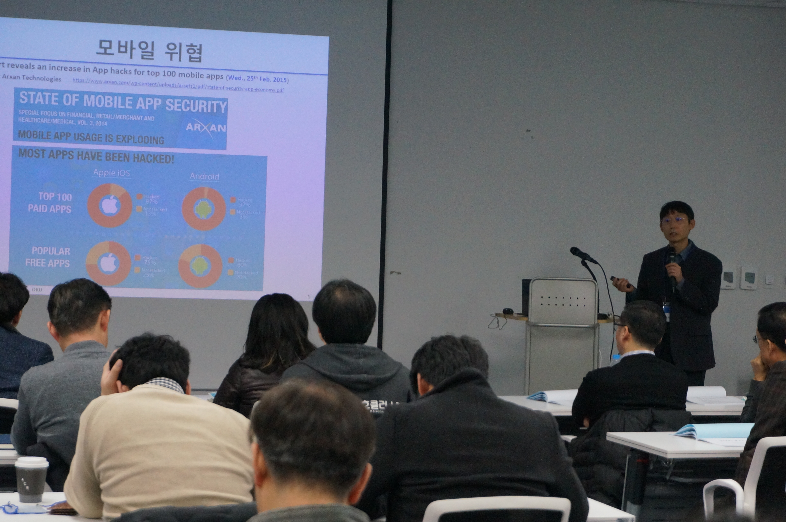
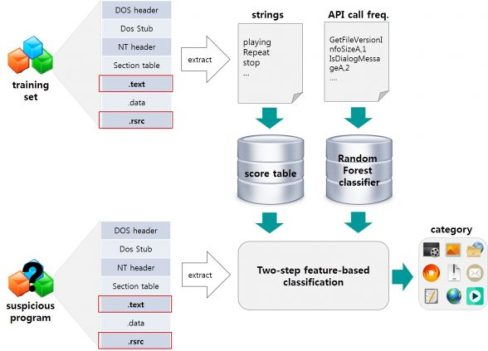
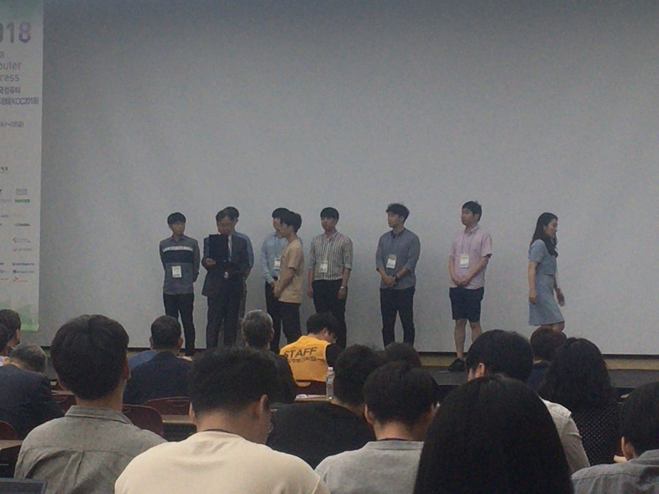
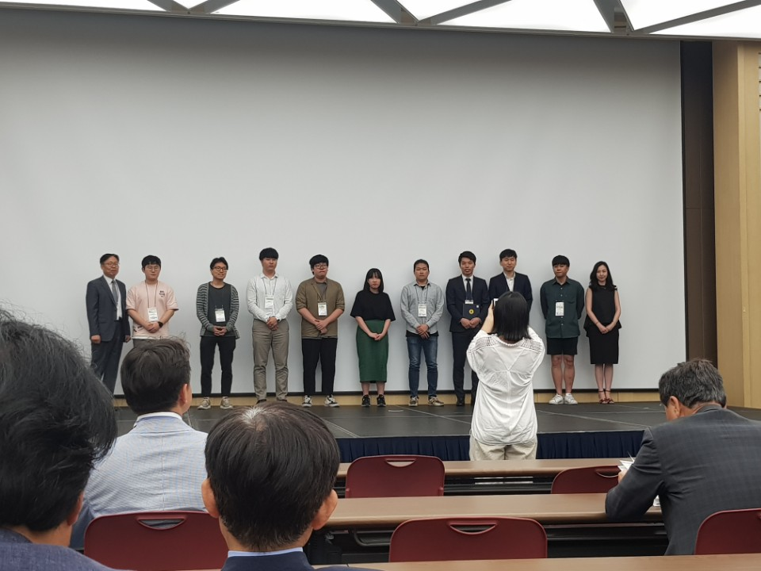
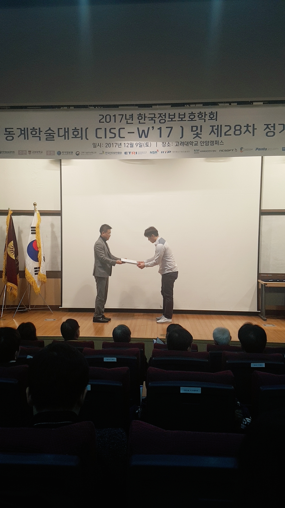
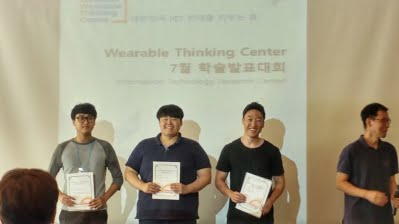
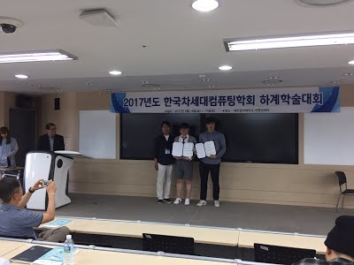

| 번호 | 제목 |
|---|---|
| 30 |
2020 한국컴퓨터종합학술대회(KCC2020) 발표 논문 - 정보보안및고신뢰컴퓨팅 분야의 우수발표논문상 수상수상일자 : 2020.08.10. |
| 29 |
정보과학회 컴퓨팅의 실제 논문지의 2020년도 최우수논문상 수상수상일자 : 2020.07.03. |
| 28 |
2020 기술이전 설명회 및 상담회
|
| 27 |
2019 한국컴퓨터종합학술대회(KCC2019) 발표 논문 - 정보과학회 컴퓨팅의 실제 논문지에 초청 및 우수발표논문으로 선정수상일자 : 2019.08.08. |
| 26 |
단국대학교 사업화 기술교류회 - 안드로이드 어플리케이션 보안기술

|
| 25 |
Samsung Security Tech Forum 2019 - Open Tech Talk의 최종 발표로 선정임경환 박사과정이 초록으로 작성하여 제출한 "어플리케이션 수준 가상화 기반의 효과적인 안드로이드 앱 역공학 방지 기법" 연구가 Samsung Security Tech Forum 2019 (SSTF 2019) - Open Tech Talk의 최종 발표로 선정되어, 2019년 8월 20일, 삼성전자서울R&D캠퍼스에서 발표 |
| 24 |
AIKE 2020, Program Co-Chair 초청조성제 교수님께서, Artificial Intelligence & Knowledge Engineering 2020 (AIKE 2020)에 Program Co-Chair로 초청되셨습니다. |
| 23 |
ACM SAC 2020, IoT Track Co-Chair로 초청조성제 교수님께서 The 35th ACM/SIGAPP Symposium On Applied Computing (ACM SAC 2020)에 IoT Track Co-Chair로 초청되셨습니다. |
| 22 |
IEEE SNAMS 2019, Technical Program Committee Member 초청조성제 교수님께서, The Sixth IEEE International Conference on Social Networks Analysis, Management and Security (SNAMS - 2019)에 Technical Program Committee Member 로 초청되셨습니다. |
| 21 |
ACM RACS 2019, Technical Program Committee Member 초청조성제 교수님께서 ACM RACS 2019 (2019 ACM Research in Adaptive and convergent Systems) 에 Technical Program Committee Member 로 초청되셨습니다. |
| 20 |
WISA 2019, Technical Program Committee Member 초청조성제 교수님께서 WISA 2019 (The 20th World Conference on Information Security Applications) 에 Program Committee Member 로 초청되셨습니다. |
| 19 |
AIE가 우리 논문을 주요 과학 논문으로 선정Advances in Engineering (AIE) selection committee identified our paper: ("A software classification scheme using binary-level characteristics for efficient software filtering",Soft Computing) as a key scientific article contributing to excellence in science and engineering research. The committee wrote a feature about our paper and highlighted in June's edition of Advances in engineering series. (June 2, 2018). For more details visit the AIE site. |
| 18 |
2018년도 한국정보과학회 최우수논문상 수상수상일자 : 2018.6.21 |
| 17 |
2018년도 한국정보과학회 우수논문상 수상수상일자 : 2018.6.21 |
| 16 |
2017년도 한국정보보호학회 동계학술대회 NSR소장상 수상수상일자 : 2017.12.9 |
| 15 |
2017년도 Wearable Thinking Center 학술발표대회 석/박사 발표 부분 수상수상일자 : 2017.7.14 |
| 14 |
2017년도 한국 차세대컴퓨팅학회 하계학술대회 우수상 수상수상일자 : 2017.6 |
| 13 |
ACM RACS 2018, Technical Program Committee Member 초청조성제 교수님께서 ACM RACS 2018 (ACM Research in Adaptive and convergent Systems 2018) 에 Technical Program Committee Member 로 초청되셨습니다. |
| 12 |
WISA 2018, Technical Program Committee Member 초청조성제 교수님께서 WISA 2018 (The 19th World Conference on Information Security Applications) 에 Program Committee Member 로 초청되셨습니다. |
| 11 |
IEEE TENCON 2018, Technical Program Committee Member 초청조성제 교수님께서 IEEE TENCON 2018에 Technical Program Committee Member 로 초청되셨습니다. |
| 10 |
SNAMS 2018, Technical Program Committee Member 초청조성제 교수님께서 Fifth International Conference on Social Networks Analysis, Management and Security (SNAMS - 2018)에 Technical Program Committee Member 로 초청되셨습니다. |
| 9 |
2017년도 ACM SAC Student Research Competition 참가상 수상수상일자 : 2017.4 |
| 8 |
WISA 2017, Technical Program Committee Member 초청조성제 교수님께서 WISA 2017 (The 18th World Conference on Information Security Applications) 에 Technical Program Committee Member 로 초청되셨습니다. |
| 7 |
Mobisec 2017, Technical Program Committee Member 초청조성제 교수님께서 Mobisec 2017 (The 2017 International Symposium on Mobile Internet Security) 에 Technical Program Committee Member 로 초청되셨습니다. |
| 6 |
RACS 2017, Technical Program Committee Member 초청조성제 교수님께서 ACM RACS 2017 (ACM Research in Adaptive and convergent Systems 2017) 에 Technical Program Committee Member 로 초청되셨습니다. |
| 5 |
CIKM 2017, Demonstration track Program Committee Member 초청조성제 교수님께서 ACM CIKM 2017 (ACM Conference on Information Knowledge Management 2017) Demonstration track 에 Program Committee Member 로 초청되셨습니다. |
| 4 |
GPC 2017, Technical Program Committee Member 초청조성제 교수님께서 GPC 2017 (The 12th International Conference on Green, Pervasive and Cloud Computing) 에 Technical Program Committee Member 로 초청되셨습니다. |
| 3 |
2016년도 한국소프트웨어감정평가학회 우수논문상 수상수상일자 : 2017.6 |
| 2 |
2016년도 International Symposium on Mobile Internet Security에서 Best Paper Award 수상수상일자 : 2016.7 |
| 1 |
2016년도 한국컴퓨터종합학술대회 우수논문상 수상수상일자 : 2016.6. |